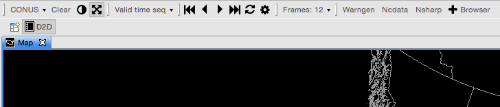
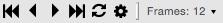
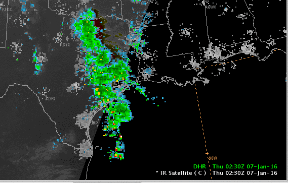
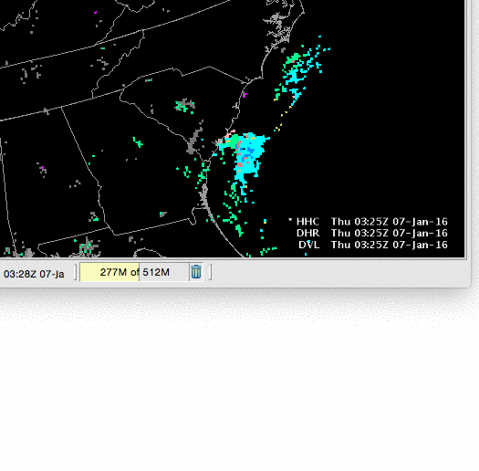
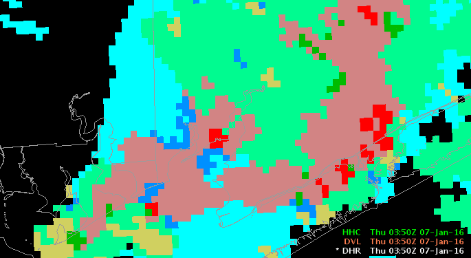

CAVE User Guide : Perspectives
D2D
D2D (Display 2-Dimensions) is the default AWIPS CAVE perspective, designed to mimmic the look and feel of the legacy AWIPS I system. Frame control, map projection, image properties, and a few featured applications make up the the primary D2D toolbar.

-
CONUS is the default map display of the continental United States in a North Polar Stereographic projection. This menu allows you to select different projections.
-
Clear will remove all non-system resources (meaning data) while preserving any map overlays you have added to the view.
-
 is a shortcut to Image Properties for the top-loaded image resource in the stack.
is a shortcut to Image Properties for the top-loaded image resource in the stack. -
freezes and un-freezes panning (movement) of the map.
-
Valid time seq is the default time-matching setting for loading data. Select this menu to switch to configurations such as Latest, No Backfill, Previous run, Prognosis loop, and more.
-
 controls the frame number, display, speed, etc. You can also control the frames with the left and right keyboard keys.
-
Application links to Warngen, Ncdata (NCP GEMPAK-like grids), Nsharp, and the Product Browser are also available.
Switching Perspectives
D2D is one of many available CAVE perspectives. By selecting the CAVE > Perspective menu you can switch into the GFE, Hydro, Localization, MPE, or National Centers Perspective (which is available in the Other… submenu. Nobody seems to know why the NCP is not listed with the other perspectives, or how to make it appear with them).

Resource Stack
At bottom-right of the map window the the Resource Stack, which displays all loaded resources and map overlays, and allows for interaction and customization with the resource via a right-click menu.
Left-Click Resource Name to Hide
A left click on any resource in the stack will hide the resource and turn the label gray. Clicking the name again makes the resource visible.

Hold-Right-Click Resource Name for Menu
Drag the mouse over a loaded resource and hold the right mouse button until a menu appears (simply clicking the resource with the right mouse button will toggle its visibility).
The hold-right-click menu allows you to control individual resource Image Properties, Change Colormaps, change resource color, width, density, and magnification, move resources up and down in the stack, as well as configure custom options with other interactive resources.

Hold-Right-Click the Map Background
for additional options, such as greater control over the resource stack legend, toggling a 4-panel display, selecting a Zoom level, and setting a Background Color. Most loaded resources will also have a menu option for reading out the pixel values:

Product Browser
The Product Browser allows users to browse a complete data inventory in a side window, organized by data type. Selections for GFE, Grids, Lightning, Map Overlays, Radar, Satellite, Redbook, and VIIRS are available. All products loaded with the Product Browser are given default settings.